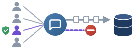
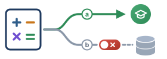

1
Opt-out dall’addestramento di un LLM
Scuola secondaria · assistente di IA generativa per la scrittura

La classe usa l’assistente per la revisione grammaticale e la stesura di testi. Una famiglia non vuole che i temi del figlio siano memorizzati o usati dal fornitore per addestrare il modello.
Soluzione operativaAccesso in modalità privacy-enhanced: istanza educational con Zero Data Retention attiva e senza login nominale. L’alunno svolge la stessa attività dei compagni, ma i suoi testi non vengono salvati né riutilizzati dal fornitore.
2
Tutoraggio adattivo per la matematica
Istituto Comprensivo · software di didattica personalizzata

Il software analizza gli errori negli esercizi di matematica per adattare il livello di difficoltà.
Soluzione operativaL’informativa (artt. 13–14 GDPR) distingue due finalità: (a) lo svolgimento del compito didattico; (b) l’eventuale uso dei dati aggregati per addestrare l’algoritmo del fornitore. Se la famiglia nega (b), lo studente usa regolarmente il software, ma i log della sua sessione sono esclusi dal dataset di ri-addestramento.